소아재활치료
팔 다리 신체기능에 장애가 발생한 경우 운동장애를 가진 환우분들에게
전문과정을 이수한 전문치료사들이 1:1로 다양하고 정확한 평가 후 치료를 실시합니다.
소아물리치료
소아물리치료 프로그램에서는 보바스치료, 기능적 건기자극치료 등을 동하여 아동의 정상적인 자세화 움직임을 유도하며, 아동이 안정된 발달을 할 수 있도록 하는데 초점을 두고 있습니다. 모든 아이들은 출생, 출생 전 후 에 대한 시기적 차이와 뇌의 손상부위와 정도, 자세긴장과 움직임, 나이, 성격, 가정환경 등 이와 같은 다양한 요인으로 서로 다른 모습들을 가지고 있습니다.
아동의 비정상적인 움직임이나 자세를 올바르고 정상적인 움직임의 형태로 아동에게 가르쳐 스스로 조절할 수 있도록 다양한 치료방법과 치료기구를 사용하여 치료합니다.
-
치료대상
1 뇌성마미, 뇌손상, 척수손상 등의 중추신경계질환으로 인한 발달 장애 아동
2 근육병, 사경, 염색체이상과 같은 질환의 아동
-
평가항목
현재 아동이 할 수 있는 능력과 하기 어려운 능력을 판별하고 그에 따른 비정상적 근긴장도 및 움직임의 양상, 그와 연관된 감각 영역의 문제점에 대한 평가가 치료세션마다 이루어집니다. 이를 위해 정상 움직임의 발달 즉, 어떻게 발달하고 어떻게 움직이는 것을 배우는지에 대한 연구가 중요합니다. 이러한 평가는 매 치료시마다 이루어지며 그에 따라 치료 또한 달라 질 수 있습니다.
-
치료내용
1 중추신경게 및 근골격계 장애를 가진 아동들의 대상으로 신체 재활치료를 실시하고 있습니다.
개별 아동의 신체기능 평가를 통하여 해당 아동의 문제점을 질적으로 연구 분석하고 그에 따라
신경발달적 접근치료법을 사용하기 때문에 매우 효과적입니다.2 가정 및 기타 외적 환경을 고려한 부모 교육도 병행하여 실시함으로써, 아동에 근본적 이해가 가능하며,
그에 따라 문제를 해결해 나가기 때문에 치료 경과도 좋습니다.3 1:1 개별치료로 이루어지며, 경험해보지 못했거나 비정상적인 자세와 신체 움직임의 방향을 옳은 방향으로
움직일 수 있도록 도와주어 스스로 움직임을 경험하고 습득할 수 있도록 해줍니다.
- 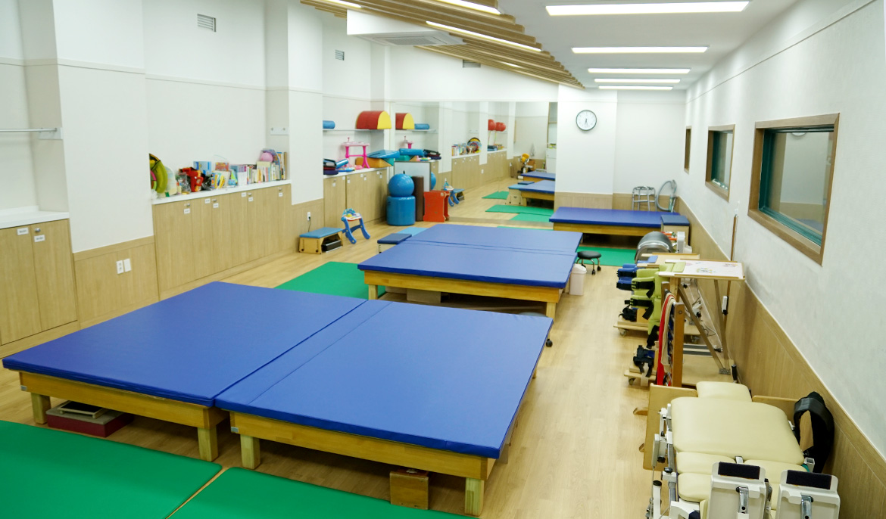
- 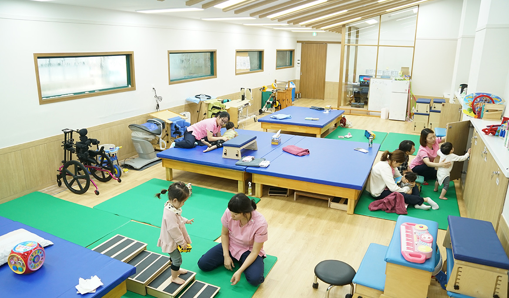
- 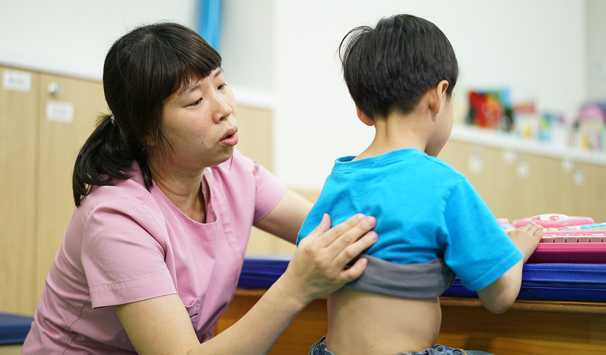
소아물리치료
소아물리치료 프로그램에서는 보바스치료, 기능적 건기자극치료 등을 동하여 아동의 정상적인 자세화 움직임을 유도하며, 아동이 안정된 발달을 할 수 있도록 하는데 초점을 두고 있습니다.
소아작업치료
여러가지 목적있는 활동과 감각 활동을 제공하여, 정상적인 움직임과 감각의 발달을 경험시켜 감각 운동기능, 지각 인지기능, 일상생활 활동
(식사, 옷 입고 벗기, 그리기 및 쓰기활동,개인위해 등), 놀이기술 등을 향상시킵니다.
또한 적절한 보조도구 및 가구를 제공하여 변형을 예방하고, 독립적인 생활과 치료의 효과를 높이며, 보호자 교육을 통하여 아동이 가정이나 유치원, 학교에서 올바로 양육되고, 치료와 연결될 수 있게 합니다.
-
치료대상
1 발달지연, 뇌성마비, 외상성 뇌손상, 척수손상, 근육질환, 염색체 이상 등으로 발달에 문제가 있는 아동
2 감각통합에 어려움이 있는 아동, 학습장애아동, 발달장애아동, 기타 일상생활의 작업 수행에 어려움이 있는 아동
-
평가항목
발달평가, 일상생활수행능력평가, 손기능 평가, 인지평가, 시지각 발당평가
-
치료내용
1 아동들이 의미있는 일상의 다양한 활동과 놀이활동, 학습과 관련된 활동을 배우고 익히며 발달시켜나갈 수 있도록 돕는 것에 초점을 두고 있습니다.
따라서 아동의 전반적인 발달정도, 놀이와 일상생활, 작업의 수행에 영향을 주는 여러 요소들에 대한 평가를 실시한 후 각 아동에게 알맞은 목표를 정하여 치료를 하게 됩니다.2 구체적인 치료방법으로는 감각자극, 지각의 발달을 위한 치료, 인지치료, 세밀한 균형감각과 협응능력 증진을 위한 치료,
손 기능의 향상을 위한 치료, 구강기능의 향상을 위한 치료, 보조도구의 제작과 적용, 감각통합치료, 보호자 교육 등이 있습니다.
각 아동의 문제에 따라 적합한 프로그램으로 진행되는 1:1 개별치료를 기본으로 하며, 필요와 목적에 따라 다양한 치료를 제공합니다.
- 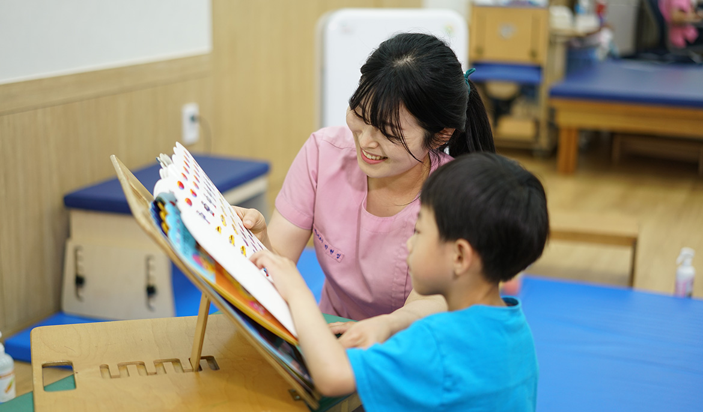
- 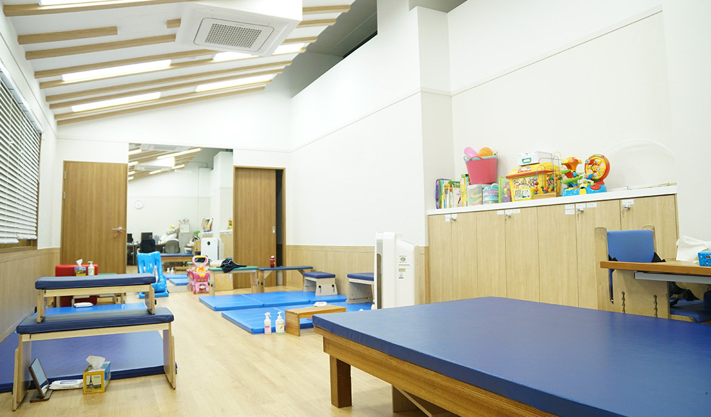
- 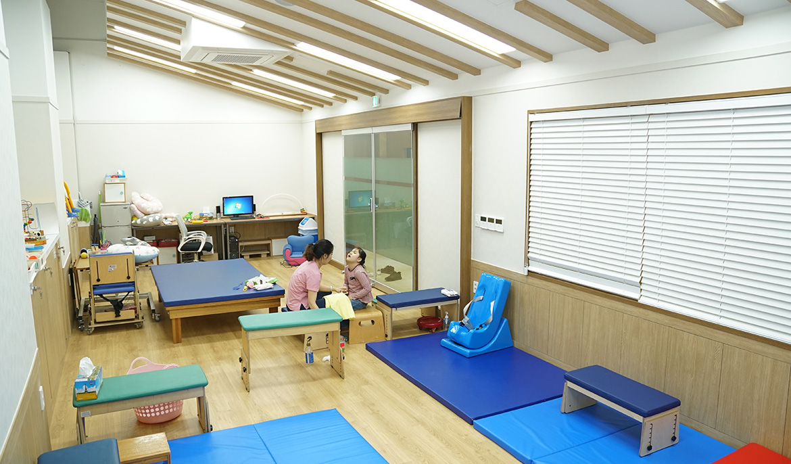
소아작업치료
여러가지 목적있는 활동과 감각 활동을 제공하여, 정상적인 움직임과 감각의 발달을 경험시켜 감각 운동기능, 지각 인지기능, 일상생활 활동
감각통합치료
감각통합은 자신의 신체와 환경으로부터 주어지는 감각들을 조직화하고 그 환경 속에서 신체를 효과적으로 사용할 수 있도록 하는 신경학적 과정입니다.
이것은 개개인의 능력에 의존하게,중추신경계에서 행동을 조직화하고 계획하기 위해 감각정보를 사용하여 정보처리를 진행하고 통합해가는 것 입니다.
-
치료대상
1 감각정보의 수용과 처리의 어려움으로 인해 정상발달이 어려운 아동(발달장애, 주의력결핍, 과잉행동장애(ADHD)
2 학습장애아동
3 반응성애착장애아동
4 감각통합기능장애아동(각성조절이 어려운 아동, 행동이 더딘 아동)
-
평가항목
발달평가, 일상생활수행능력평가, 손기능 평가, 인지평가, 시지각 발당평가
-
치료내용
1 감각통합에 어려움이 있는 아동들을 대상으로 가 아동에게 맞는 개별적인 치료프로그램으로 시행되며, 촉각, 진정감각, 고유수용감각,
청각, 시각, 미각, 등 감각자극을 향상시키기 위한 다양한 기회를 제공하고 이를 통해 적응반응을 계획, 조직화하여 의미 있는 활동들을 이끌어 낼 수 있도록 유도함으로써 감각자극을 처리하고 통합하는 중추신경계 능력을 향상시키고자 합니다.2 아동이 스스로 원하는 활동을 하면서 아이가 흥미를 느낄 수 있도록 유도하고, 아동이 적응반응을 보일 수 있도록 활동의 종류와
난이도를 조절하여 제공합니다.
- 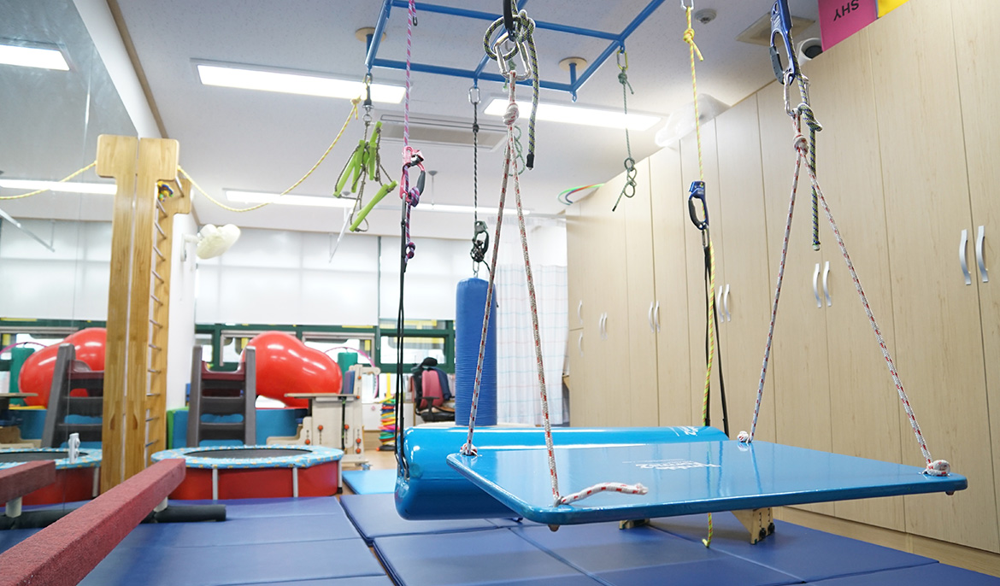
- 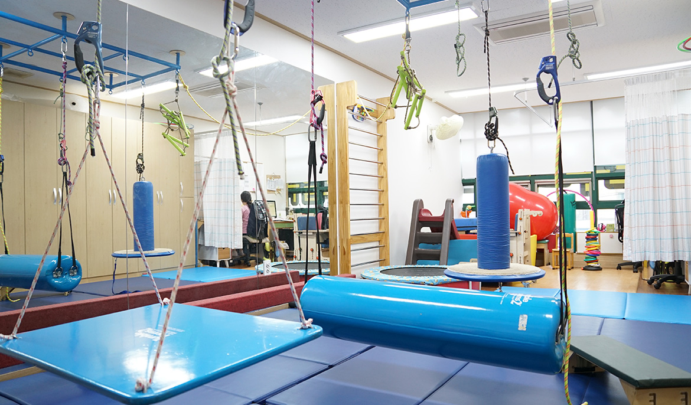
- 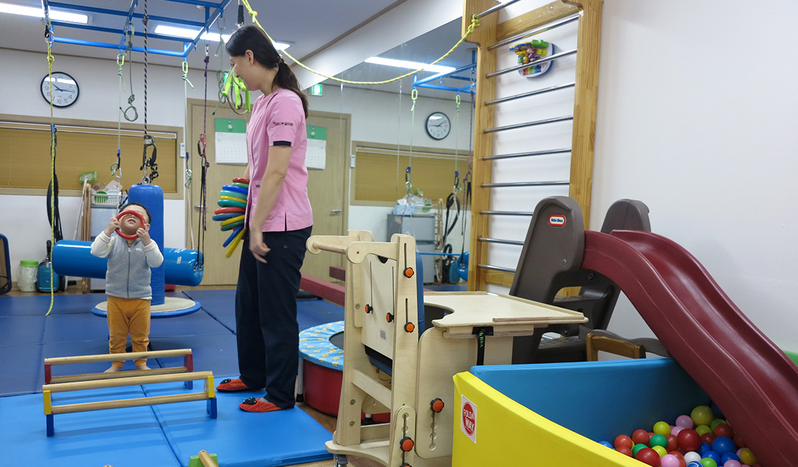
감각통합치료
감각통합은 자신의 신체와 환경으로부터 주어지는 감각들을 조직화하고 그 환경 속에서 신체를 효과적으로 사용할 수 있도록 하는 신경학적 과정입니다.
소아언어치료
언어장애란 언어를 이해하고 표현하며 사용하는데 어려움을 보이는 것을 말합니다. 언어장애의 종류는 언어발달장애, 조음장애, 유창성장애, 신경언어장애,
음성장애로 나누어 볼 수 있습니다. 언어치료는 공식적인 언어검사를 통하여 아동의 언어발달수준 및 장애유형을 진단하여 치료 및 교육을 실시하는 것을 말합니다.
또한 아동의 부모에게 아동언어상담 및 교육방법을 제공하여 드림으로써 치료실 밖의 일상생활에서도 아동의 언어발달을 촉진시킬 수 있도록 하는 것입니다.
아동의 비정상적인 움직임이나 자세를 올바르고 정상적인 움직임의 형태로 아동에게 가르쳐 스스로 조절할 수 있도록 다양한 치료방법과 치료기구를 사용하여 치료합니다.
-
치료대상
1 언어발달지체 및 장애
2 구개파열로 인한 언어장애
3 청각장애 및 조음음운장애(발음장애)
4 정신지체로 인한 언어장애
5 유창성장애
6 자폐로 인한 언어장애
7 기타 정서, 행동, 사회성의 문제로 인한 언어발달장애
-
평가항목
영유아 언어발달검사, 수용언어 및 표현언어발달척도, 언어문제해결력, 구문의미이해력, 수용/표현 어휘력, 한국어 표준그림 조음음운,
구강조음기관의 기능선별, 보호자 면담 및 검사자의 관찰 -
치료내용
아동의 언어능력을 평가하기 위해 보호자 면담 및 검사자의 관찰, 표준화/비표준화 검사 도구를 이용하여 실시하며 소요시간은
약 40분~1시간 정도입니다.
검사 후 검사 결과를 알려주고 아동 및 성인의 증상에 적절한 교육과 전문적인 치료방향을 수립합니다.
- 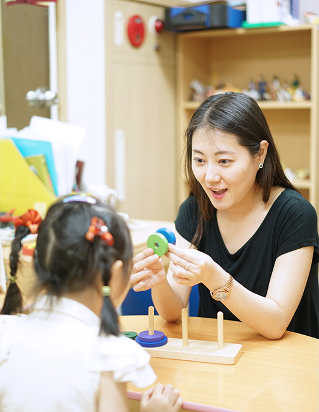
- 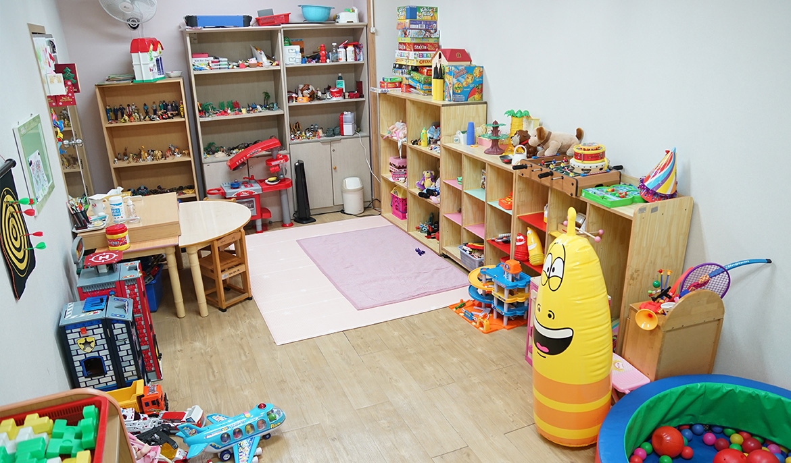
소아언어치료
언어장애란 언어를 이해하고 표현하며 사용하는데 어려움을 보이는 것을 말합니다. 언어장애의 종류는 언어발달장애, 조음장애, 유창성장애, 신경언어장애, 음성장애로 나누어 볼 수 있습니다.
청소년 재활치료
팔 다리 신체기능에 장애가 발생한 경우 운동장애를 가진 환우분들에게
전문과정을 이수한 전문치료사들이 1:1로 다양하고 정확한 평가 후 치료를 실시합니다.
-
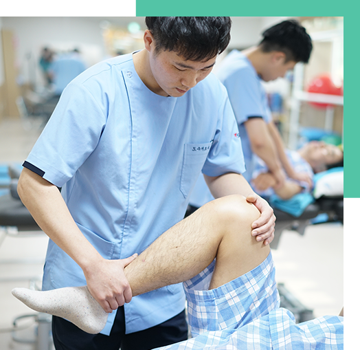
청소년 치료실이 필요한 이유
소아·성인만으로 구분하여 치료하는 병원은 많으나, 성장기의 청소년을 위한 세팅도구와
장비로 차별성과 전문성이 있는 치료를 하는 병원은 전무한 실정입니다.
특히 연령에 따른 적절한 치료를 위한 공간의 분리와 학교생활과 관련한 치료적 접근은
반드시 필요합니다. 가령 치료의 접근성이 부족해지거나 휠체어 생활의 시간이 늘어나는
청소년기에 관절 변형 및 관절 구축, 또한 기능 저하 등 2차적 문제가 현저히 늘어나
이에 맞는 전문적인 치료적 접근이 필요합니다 -
청소년 치료실만의 장점
소아치료실에서 성인치료실로 전환되는 과정에서 소아치료에 대한 경험이 부족한
성인치료사들이 소아치료에서 진행되어 온 치료 접근 관점 및 방법과 다른 경우가 많습니다.
본 원의 청소년 치료실은 소아치료에 대한 풍부한 경험과 소아치료실과의 원활한 소통으로
치료의 연계성을 가지고 성인치료까지 이어갑니다.
독립된 공간에서 대상자의 집중력을 증진시킬 수 있으며,
소아·청소년·성인치료실이 한 건물에 위치하여 치료의 단절없이 연속성있게 진행됩니다.
뿐만 아니라 언어, 음악, 미술, 수영 등의 다양한 프로그램도 함께 진행할 수 있다는
장점도 있습니다.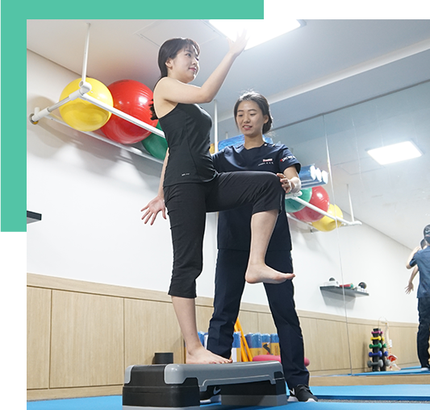
청소년물리치료
청소년 물리치료는 아이들의 성장에 맞추어 치료를 전문적으로 하는 것에 목표로 합니다. 보바스치료, 고유수용성 신경근촉진법, 중추 신경 발달학 치료 등을 통하여 학교생활이 늘어나치료의 접근성이 부족해지거나 휠체어 생활의 시간이 늘어나는 청소년기에 관절 변형 및 관절 구축, 또한 기능 저하 등 2차적 문제를 해결하고자 청소년에 맞는 세팅도구, 장비를 통한차별성과 전문적인 치료로 접근합니다.
-
치료대상
뇌성마미, 뇌손상, 척수손상 등의 중추신경계질환으로 인한 발당 장애 아동들과 근육병, 사경, 염색체이상과 같은 질환의 아동들을 대상
-
평가항목
1 소아치료와 연계하여 치료 접근법이 연결되는 치료를 위하여 동일한 평가도구를 이용하여 평가합니다.
그리고 청소년기에 올 수 있는 2차적 문제와 변형에 대해 미리 예방할 수 있도록 접근하고 있습니다.2 전문적 평가 지식을 습득한 물리치료사가 직접 진행하며 대운동 기능평가와 관절가동범위 검사, 도수근력검사를 통하여 객관적으로 접근하며 이를 바탕으로 치료접근 방법과 질적 향상을 위해 기본 자료로 적용합니다.
-
치료내용
성장이 멈추는 성인 전 최소한의 변형 예방과 성인이 된 후 자립을 위한 스스로의 이동이나 자세유지를 익힐 수 있도록 청소년기의 신체발달에 따라 보다 폭 넓고 전문적인 접근을 하고 있습니다. 관절 변형 및 구축 예방, 휠체어 워커 등에 따른 기구 이용시 바른 자세 지도, 독립된 수행의 기능 향상 유도하며 가정 및 학교 등 내/외적 환경을 고려하여 부모교육도 동시에 실시하고 있습니다.
- 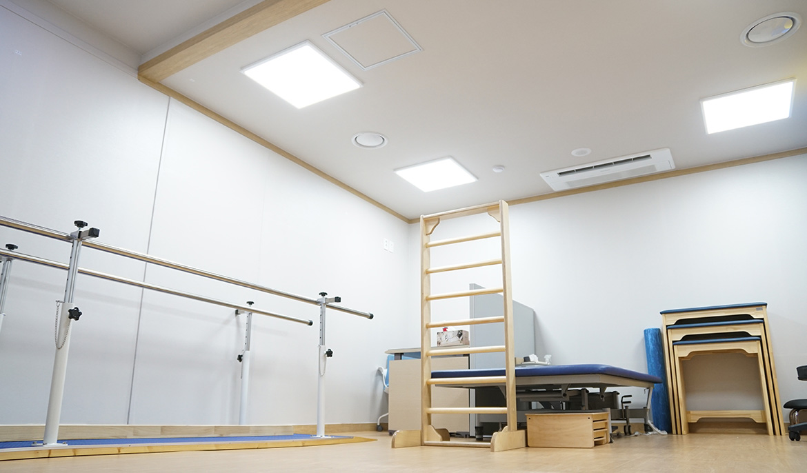
청소년물리치료
청소년 물리치료는 아이들의 성장에 맞추어 치료를 전문적으로 하는 것에 목표로 합니다.
청소년작업치료
상지 관절운동 및 연하치료, 시지각 활동 및 인지활동, 일상생활에 관련된 활동의 연습 및 실제에 적용하기 등이 이루어집니다.
-
치료대상
13~19살까지의 학령기 장애아동
-
평가항목
1 지기능검사(상지의 관절가동범위 및 근력, 잡기, 집기와 같은 기능적 움직임 평가)
2 페그보드검사(세밀한 손 동작 및 집기능력과 같은 소근육 기능 평가)
3 일상생활동작검사(일상생활활동에 대한 자립도 검사)
4 작업치료평가지(수행배경, 수행요소, 지각 및 인지적인 요소 분석)
-
치료내용
1 학습과 관련한 다양한 부분 평가 및 중재 (글쓰기, 읽기, 그리기, 가위질 하기, 계산하기 등)
2 대근육 운동기술, 소근육 운동기술, 시지각기능, 인지기능, 연하기능 등 아동 개개인에 맞는 작업수행 및 수행기능 향상을 위한 활동
3 과제의 반복 수행을 통하여 수행능력 향상 및 과제 난이도 향상
- 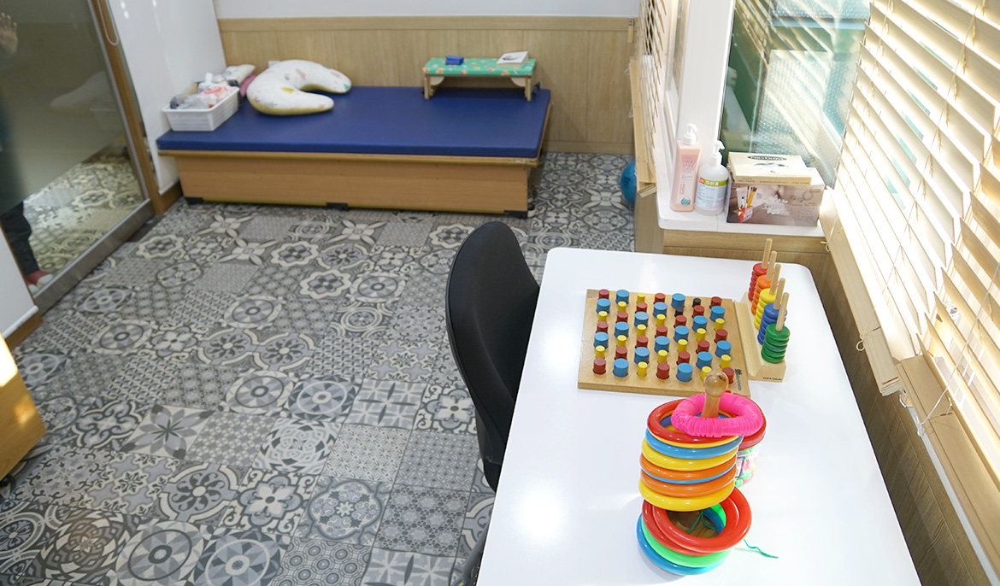
청소년작업치료
상지 관절운동 및 연하치료, 시지각 활동 및 인지활동, 일상생활에 관련된 활동의 연습 및 실제에 적용하기 등이 이루어집니다.
성인 재활치료
팔 다리 신체기능에 장애가 발생한 경우 운동장애를 가진 환우분들에게
전문과정을 이수한 전문치료사들이 1:1로 다양하고 정확한 평가 후 치료를 실시합니다.
성인물리치료
운동치료 전문과정을 이수한 재활 전문 물리치료사들이 환자의 상태에 맞는 치료법으로 관절의 강직, 근육 위축 등의 신체 기능저하를 예방하고,
정상적인 근긴장도 및 신체 균형의 유지, 증진 근력증가 통증완화를 위하여 치료합니다.
또한 중추신경계발달재활치료, 매트 및 이동훈련, 보행훈련, 근력강화 및 지구력 훈련, 호흡재활, 기능적 전기 자극치료 슬링 치료 등을 통하여
비정상적인 긴장도 및 동작, 패턴을 정상적인 동작의 촉진을 통한 기능의 최적화에 목표를 두고 치료효과를 극대화시켜 삶의 질을 향상시키고자 최선을 다하고 있습니다.
-
치료대상
뇌졸증, 외상성 뇌손상, 척수 손상, 파킨슨병 등의 중추 및 말초신경계 손상장애, 만성 노인성 질환, 근골격계 질환자
-
평가항목
환자에 대한 주관, 객관적인 자료를 얻기 위하여 의식, 지남력, 주의력, 판단력, 문제해결능력, 의사소통, 지각, 정서감각 등의 신경생리학적인 검사와 관절가동범위, 도수근력검사,근육의 긴장도 및 정상적인 움직임과 비정상적인 움직임의 평가를 통하여 움직임에 대한 반응과 동작의 분석을 찾아내고 기능적 활동과 균형능력 정도를 분석하여 일상생활 수행능력을 평가합니다.
-
치료내용
중추신경계 및 근곤결계 손상으로 인한 마비와 경직의 치료, 기능회복을 목적으로 환자의 상태를 정확하게 평가하여 장,단기적 목표를 세우고,
적절한 근 긴장도의 유지 및 움직임의 재 학습과 자세조절능력 그리고 환자의 기능적 상태에 가장 적합한 잔존 능력을 개발하는데 역점을 두고 치료합니다. 본원 재활치료실에서는 보바스(Bobath) 및 고유수용성 신경근촉진법(PNF), 중추 신경발달학치료(NDT) 등의 교육과정을 120시간 이상 이수한 물리치료사가 1인의 환자를 1:1로 중점적으로 운동치료를 시행합니다.
- 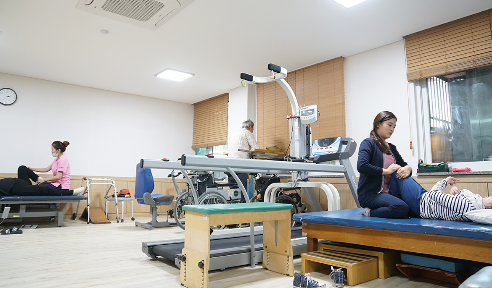
성인물리치료
운동치료 전문과정을 이수한 재활 전문 물리치료사들이 환자의 상태에 맞는 치료법으로 관절의 강직, 근육 위축 등의 신체 기능저하를 예방하고,
정상적인 근긴장도 및 신체 균형의 유지, 증진 근력증가 통증완화를 위하여 치료합니다.
성인작업치료
작업치료는 신체적 정신적인 장애나 발달장애가 있는 환자들이 일상생활 중 요구되는 활동을 스스로 수행할 수 있도록 그 기능의 회복을 도와주는 치료 프로그램입니다.
적절하고 의미있고 유용한 작업을 수행함으로써 불완전한 기능을 보다 나은 상태로 만들고, 더 이상의 악화를 예방하고자 실시합니다.
환자분들의 발달 및 장애 상태직업이나 활동영역 등을 고려하여, 장애는 교정을 통해 최소화시키고 남아있는 신체 기능은 반복훈련을 통해 최대한 끌어내
약화된 일상생활활동을 수행할 수 있도록 개개인의 능력에 맞게 서비스를 제공하는 것입니다.
-
치료대상
뇌졸증, 외상성 뇌손상, 척수손상, 심폐질환, 근골격계 질환(근육질환, 화상, 절단), 노인성 질환(치매, 퇴행성 질환), 정신과 질환(우울증, 신경증) 등을 대상으로 실시합니다.
-
평가항목
1 수지기능검사 : 쥐는 힘, 다양한 쥐기 능력, 손안에서의 물체를 다루는 능력
2 감각검사 : 촉각, 통증/온도 감각, 구별감각(고유수용성감각 등)
3 인지 및 시지각 검사 :시지각, 신체인지, 지남력, 주의집중력, 기억력, 판별력, 문제해결능력, 수리력
4 일상생활수행능력 평가 :개인위생, 먹기, 입기, 화장실 사용, 이동방법, 휠체어의 사용, 의사소통 가사활동, 여가생활 등을 평가합니다.
-
치료내용
상지기능향상 훈련, 근력증진, 지구력증진, 미세운동협응 훈련, 균형 훈련, 시지각 훈련 및 인지기능 향상 훈련 등, 환자의 손상된 기능 회복과 관련된 치료와 일상생활동작 증진을 통한 삶의 질 향상을 목적으로 환자의 특성에 맞는 다양한 훈련을 진행합니다.
- 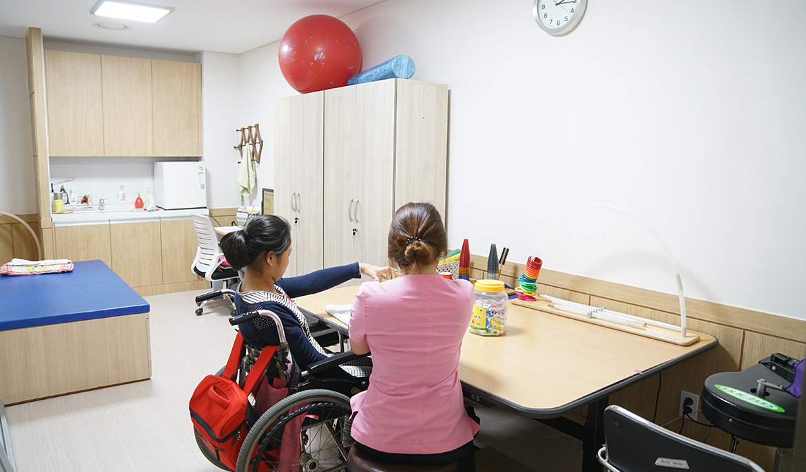
성인작업치료
작업치료는 신체적 정신적인 장애나 발달장애가 있는 환자들이 일상생활 중 요구되는 활동을 스스로 수행할 수 있도록 그 기능의 회복을 도와주는 치료 프로그램입니다.
-
SRC병원
02-871-3636
서울특별시 관악구 보라매로 44(봉천동722-19)
SRC병원 부설의원 1~3층팩스번호 02-876-3202 대표자 이영상
고유번호증 129-82-11729 -
진료시간
평일 진료AM 09:00 ~ PM 06:00
토요일 진료AM 09:00 ~ PM 01:00
점심시간PM 12:00 ~ PM 01:00
※ 일요일 및 공휴일은 휴진입니다
-
찾아오시는 길